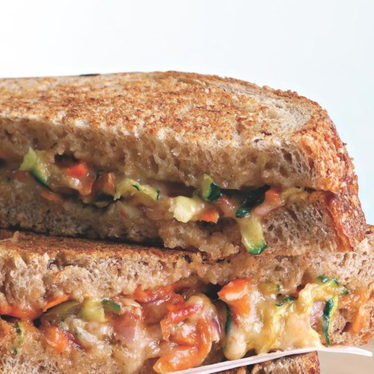

EATING MODERATELY
The best way to eat healthy and maintain a healthy lifestyle is with moderation and exercise. A balanced diet consisting of good fats, whole grains, low-fat or non-fat dairy, low sugar fruits, vegetables and lean proteins is the easiest way to maintain a healthy weight. Drinking plenty of water, and limiting soda and other sugary drinks is also important. Consuming the appropriate amounts of nutrients is the key to eating healthy. Basically this is called a diet. People tend to confuse this word with the term "weight loss", but a diet is usually the types of food that people eat on a regular basis. For example diets shared by different communties include the Japanese diet which seafood and rice are consumed frequently. There are various types of diets you just need to find one that will be the right fit for you.
SHOULD OR SHOULD NOT EAT?
If you are trying to loose weight there is some things you should clearly not eat. For example chips,cookies, candy, soda, juice and any oily foods are out of the question. Eating less carbohydrates is recommended because they break down into sugar and that later on breaks down into calories. Also perservereds is at the top of the rank just because its not fresh or healthy for you. Home cooked dinner is always the best when trying to lose weight rather than eating outside food. You should not buy anything to help you loose weight. It should be a natural process that does not need to be rushed.
The types of food you should be eating when trying to loose weight are whole grains, citrus fruits, oragnic foods, non-GMO products,low calorie snacks and drinking plenty of water. If most of these foods are in your regular diet you will commence to loose weight day by day. Dieting is the most signifcant part when trying to loose weight.
RECIPES FOR YOU
From Chinese restaurant recipes to Italian pasta dishes, our homemade versions of restaurant favorites are healthier options that save you calories & money. Instead of going out to eat, make one of these healthy recipes at home.For example:
Cauliflower Chicken Fried Rice

Get an extra serving of vegetables and cut back on carbs by replacing rice with riced cauliflower in this healthy chicken fried rice recipe.
1 teaspoon peanut oil plus 2 tablespoons, divided2 large eggs, beaten,3 scallions, thinly sliced, whites and greens separated
1 tablespoon grated fresh ginger1 tablespoon minced garlic1 pound boneless, skinless chicken thighs, trimmed and cut into ½-inch pieces
½ cup diced red bell pepper,1 cup snow peas, trimmed and halved4 cups cauliflower rice (see Tip)3 tablespoons reduced-sodium tamari or soy sauce1 teaspoon sesame oil (optional)<
Chicken Piccata with Pasta and Mushrooms

Our chicken piccata, served over whole-wheat pasta, has a rich lemon-caper sauce that's made with extra-virgin olive oil and just a touch of butter for flavor. If you like, you can use a mild fish like tilapia or even shrimp instead of chicken breast.
3 teaspoons extra-virgin olive oil, divided
⅓ cup all-purpose flour, divided2 cups reduced-sodium chicken broth½ cup white wine 2 tablespoons lemon juice¼ cup chopped fresh parsley2 tablespoons capers, rinsed 2 teaspoons butter6 ounces whole-wheat angel hair pasta½ teaspoon salt, divided¼ teaspoon freshly ground pepper4 chicken cutlets, ( ¾-1 pound total), trimmed
3 large cloves garlic, minced1 10-ounce package mushrooms, sliced
SouthWestern Cheese Panini

Lots of colorful vegetables and salsa make this cheesy panini prettier than any grilled cheese you've ever seen. The small amount of Cheddar cheese in this sandwich goes a long way because it is shredded and sharp. Serve with a mixed salad and you've got a delightful lunch or light supper.
4 ounces shredded sharp Cheddar cheese ,1 cup shredded zucchini,½ cup shredded carrot,¼ cup finely chopped red onion,¼ cup prepared salsa,s1 tablespoon chopped pickled jalapeño pepper, (optional)8 slices whole-wheat bread,2 teaspoons canola oil.